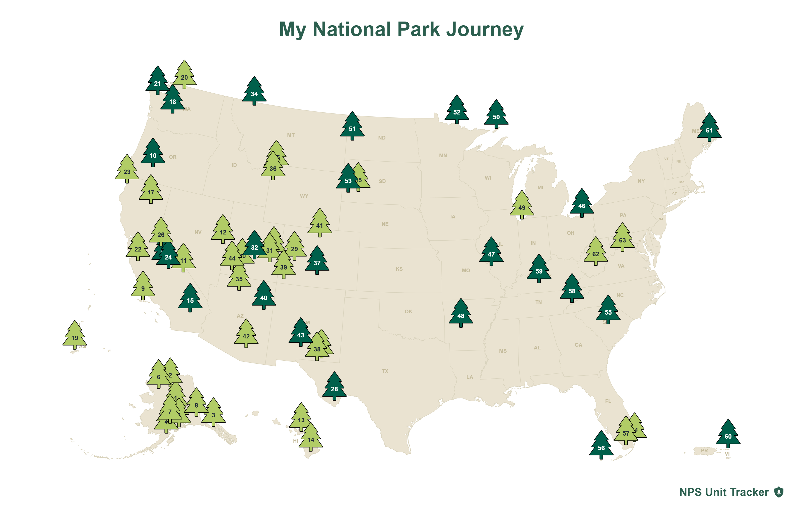

Welcome to my blog! I'm a traveler who's goal is to visit all 63 National Parks in the United States.
Current park count: 25/63
The first National Park I ever visited was Hot Springs National Park over in Arkansas, and from there I was hooked. Whether it's the mountains or the sea,
caves or caverns, or anything inbetween, I love the experience of being surrounded by nature. I mostly do solo-traveling, but I'll occasionally venture out
with some of my friends to experience the outdoors.
This blog is dedicated not only to showing you the beauty of the natural world, but also to give you the best tips and tricks if you ever decide to visit
some of the parks I discuss. I love including both my personal experience and some helpful facts that you might need for your journey. As John Muir once said:
"When one tugs at a single thing in nature, he finds it attached to the rest of the world."
Check out my most recent adventure Here!